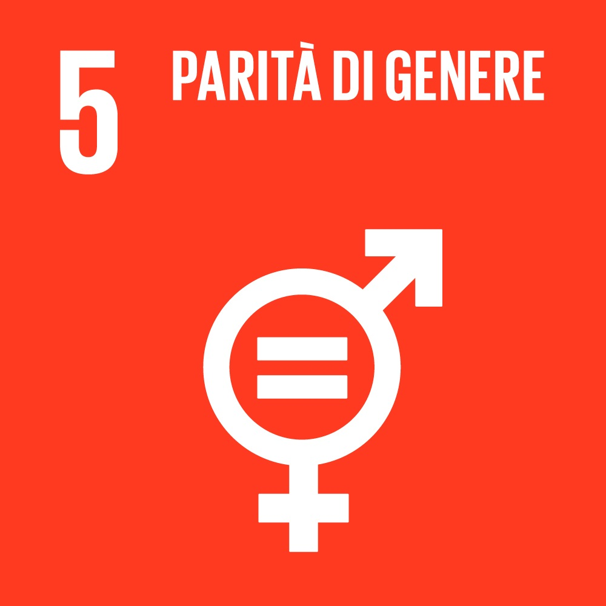
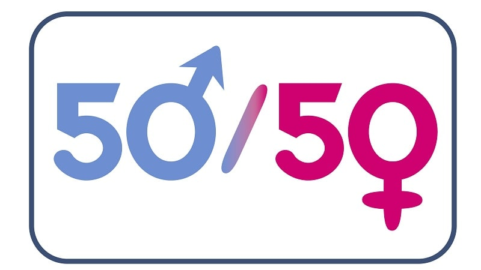

OBIETTIVO 5

parità di genere
Raggiungere l’uguaglianza di genere ed emancipare tutte le donne e le ragazze
per raggiungere questi obiettivi e stato stabilito di:
- Porre fine, ovunque, a ogni forma di discriminazione nei confronti di donne e ragazze
- Eliminare ogni forma di violenza nei confronti di donne e bambine, sia nella sfera privata che in quella pubblica, compreso il traffico di donne e lo sfruttamento sessuale e di ogni altro tipo
- Eliminare ogni pratica abusiva come il matrimonio combinato, il fenomeno delle spose bambine e le mutilazioni genitali femminili
- Riconoscere e valorizzare la cura e il lavoro domestico non retribuito, fornendo un servizio pubblico, infrastrutture e politiche di protezione sociale e la promozione di responsabilità condivise all’interno delle famiglie, conformemente agli standard nazionali
- Garantire piena ed effettiva partecipazione femminile e pari opportunità di leadership ad ogni livello decisionale in ambito politico, economico e della vita pubblica
- Garantire accesso universale alla salute sessuale e riproduttiva e ai diritti in ambito riproduttivo, come concordato nel Programma d’Azione della Conferenza internazionale su popolazione e sviluppo e dalla Piattaforma d’Azione di Pechino e dai documenti prodotti nelle successive conferenze
- Avviare riforme per dare alle donne uguali diritti di accesso alle risorse economiche così come alla titolarità e al controllo della terra e altre forme di proprietà, ai servizi finanziari, eredità e risorse naturali, in conformità con le leggi nazionali
- Rafforzare l’utilizzo di tecnologie abilitanti, in particolare le tecnologie dell’informazione e della comunicazione, per promuovere l’emancipazione della donna
- Adottare e intensificare una politica sana ed una legislazione applicabile per la promozione della parità di genere e l’emancipazione di tutte le donne e bambine, a tutti i livelli
